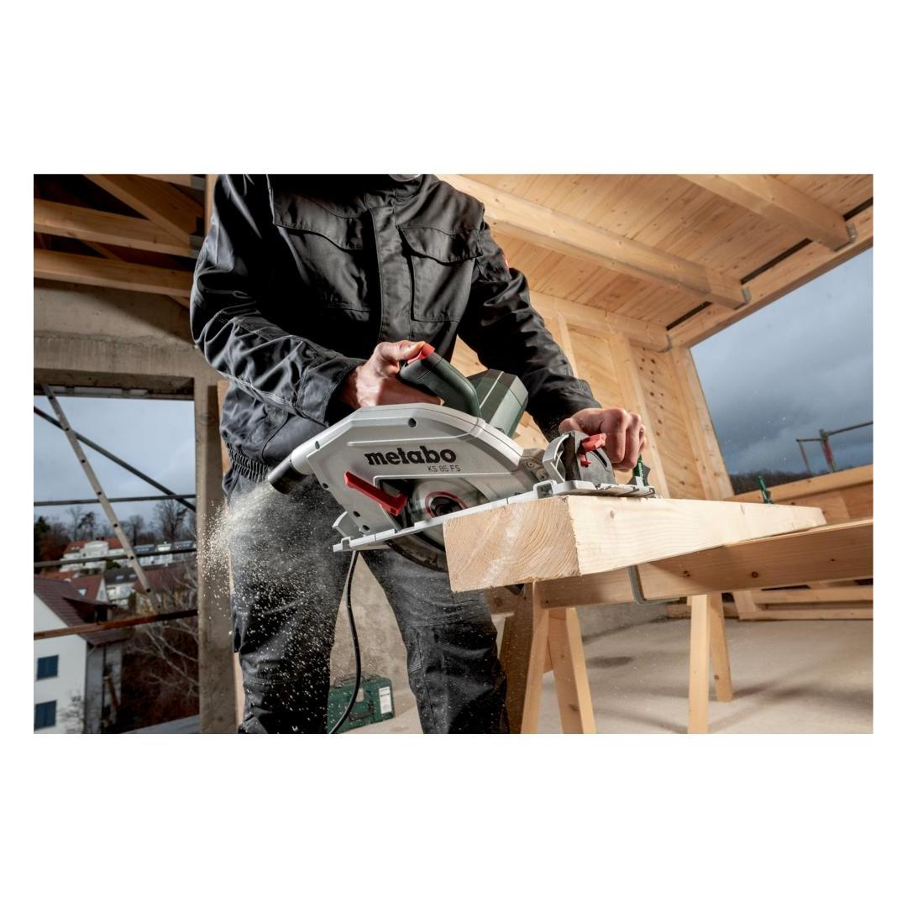
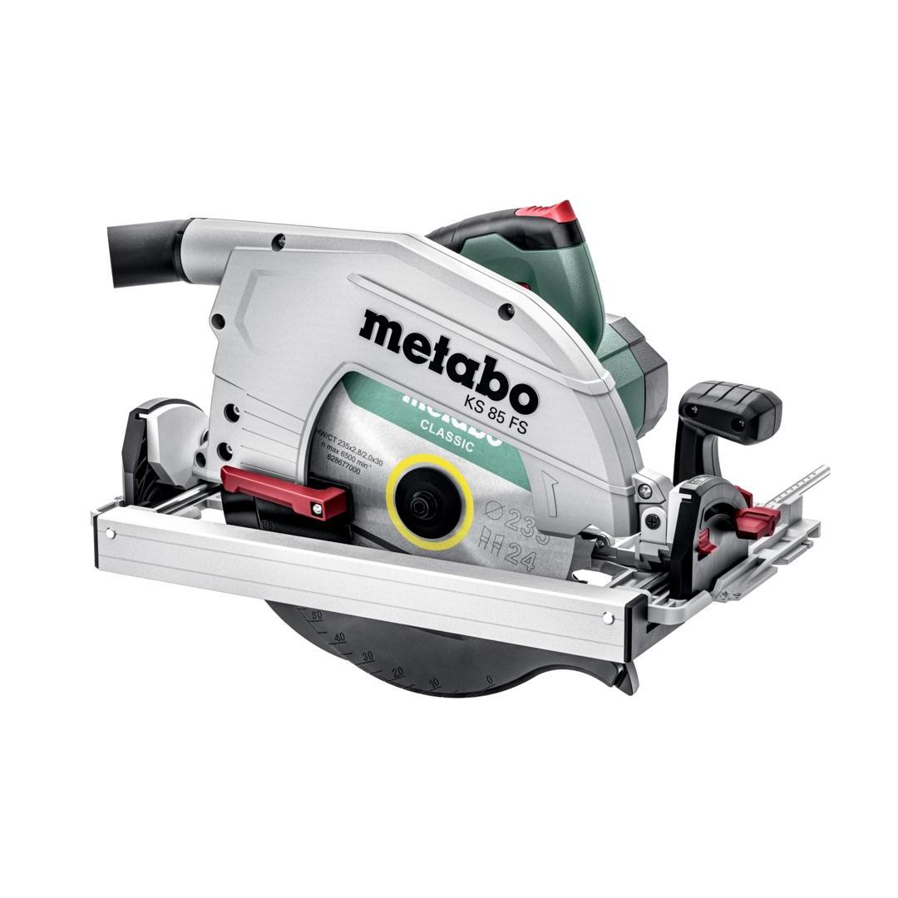

601085000


| Rated input power | 2000 W |
| Maximum cutting depth at 90° | 85 mm / 3 11/32 " |
| Saw blade Ø x bore | 235 x 30 mm // 9 1/4 x 1 3/16 " |
| No-load speed | 4500 rpm |
This tool can be used directly on the FS guide rails from Metabo
Cross cutting rail KFSFast, precise cross cuts thanks to easy coupling with a KFS Metabo cross cutting rail
| Rated input power | 2000 W |
| Output power | 1100 W |
| Maximum cutting depth at 90° | 85 mm / 3 11/32 " |
| Maximum cutting depth at 45° | 65 mm / 2.2625 " |
| Max. cutting depth with guide rail | 80 mm / 3 5/32 " |
| Saw blade Ø x bore | 235 x 30 mm // 9 1/4 x 1 3/16 " |
| Swivel range from / to: | 0 / + 48 ° |
| No-load speed | 4500 rpm |
| Speed at rated load | 3800 rpm |
| Max. cutting speed | 55 |
| Weight (without power cable) | 8.4 kg / 18.5 lbs kg |
| Cable length | 4 m / 13 ft |
| Sawing chipboards | 3.4 m/s² |
| Uncertainty of measurement K | 1.5 m/s² |
| Sound pressure level | 98 dB(A) |
| Sound power level (LwA) | 106 dB(A) |
| Uncertainty of measurement K | 3 dB(A) |
| Carbide circular saw blade (24 teeth) |
| Aluminium parallel guide |
| Hexagonal wrench |